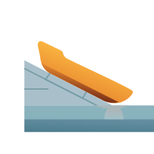

| Take | Renders at 128 / 32 / 16 css px (2× retina sources), plus the 16px squint magnified | Rubric | Verdict |
|---|---|---|---|
| A · icon.svgEngine A · hand-authored layered SVG · SHIPS |
|
11 / 12 | Rebuilt to C1’s composition after C1 won the material comparison, which is what the pipeline prescribes rather than shipping the raster. Passes all four non-negotiables on real renders: full-bleed artwork with the squircle as a clip, symmetric 132px margins with the mass optically centred, a silhouette render that still names “hull entering water off a slipway” in solid black, and a 16px squint the warm hull carries. Four real layers map 1:1 onto Icon Composer, and the two authored overlaps (hull under the surface, way running on beneath it) are real transparency rather than baked pixels. Point deducted at #7 figure-ground: above the waterline the way is light slate on near-white porcelain, so it leans on the hull to be found until it reaches the water. |
| B · icon-engineB-arrow.svgEngine B · Arrow vector take from the shared spec |
 |
7 / 12 | Lost on three non-negotiables at once. #1: the artwork never fills the canvas, so the ground is bare and the composition floats inside the mask rather than being designed for it. #2: the subject crowds the upper left and the lower right is dead water. #4: a thin hull over a large grey wedge smears into one grey mass by 16px. Salvaged into the master: its chunkier hull proportion and near-straight sheer, which is what stopped the earlier drafts reading as an open canoe. |
| C1 · icon-engineC1.pngEngine C · GPT Image 2 raster, referenced against Safari and Photos from the corpus |
|
10 / 12 | Won the material comparison and still cannot ship. The best gel in the set: a genuinely poured hull with a crisp sheer highlight, a foam crest at the entry, and translucent water with the way visibly running on beneath it. It also proved the open-water composition can read, which two hand-authored drafts had failed to do. It fails #1 and #10 as a flat pre-masked raster with identity carried by a colour relationship that dies under Dark/Clear/Tinted. Its whole composition, its poured-gel hull ramp and its full-length sheer highlight were rebuilt into the Engine A master; the master is the vector answer to this take, not an independent idea. |
| C2 · icon-engineC2.pngEngine C · GPT Image 2 raster, second take |
|
8 / 12 | The same raster failure on #1 and #10, and weaker than C1 on its own terms. The way reads as a handrail or a fence rather than a slipway, which costs #11 personality, and the pale water sits too close in value to the pale tile, which costs #7. Kept on the sheet because it is the control that shows how much of C1's win came from the sleepers and the foam crest rather than from the palette. |
#bg / #mid / #fg / #highlight, with identity carried in shape and value so it survives Dark, Clear and Tinted. All four non-negotiable checks were verified on real renders rather than reasoned about: a solid-black silhouette render, a 32px render magnified six times for the squint, and measured margins. Its material provenance is C1, whose poured-gel hull ramp and full-length sheer highlight were rebuilt into the layered master rather than shipped as pixels. Known liabilities to revisit: the hull spans about 74% of the tile, wider than the 55–65% the composition guidance calls for, which is a deliberate call copied from C1 and worth re-testing; the sleepers and the underwater run of the way are gone by 32px, so the small-size read rests entirely on the hull, and the hull is slender enough at 16px that it is nameable rather than instant; and the porcelain ground gives the way very little separation until it reaches the water.rsvg-convert -w {1024,256,64,32} for SVGs, the same over a clip-path wrapper for rasters.